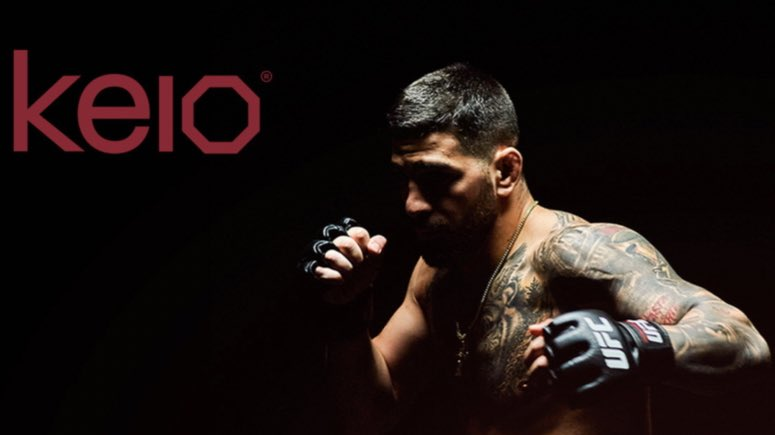
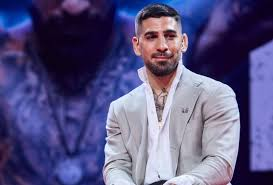

Topuria estaba programado para enfrentarse a Alexander Volkanovski el 20 de enero de 2024 por el Campeonato Mundial de Peso Pluma de UFC en UFC 297. Sin embargo, Volkanovski fue llamado para enfrentar a Islam Makhachev por el Campeonato Mundial de Peso Ligero de UFC en UFC 294. Como resultado, esta pelea se retrasó un mes para encabezar el UFC 298 el 17 de febrero de 2024. Ganó la pelea y el título por KO en el segundo asalto. Esta victoria lo hizo merecedor de su tercer premio de Actuación de la Noche.KEIO

KEIO, la primera y única compañía de telecomunicación inspirada en el deporte. “Es un superproyecto, lo empecé hace tiempo. En lugar de ofrecerle a la gente entretenimiento para que se queden en casa, tengan plataformas de bienestar y desarrollo personal”, contó Ilia. Esta plataforma ofrecerá diferentes herramientas para poder llevar un estilo de vida saludable. “A parte de dar una dieta personalizada, podemos educar a la gente a cómo comer. Vas, te haces una dieta y al mes siguiente no la sigues, tienes los conocimientos para saber cómo nutrirte. También ofrecemos canales de deporte, todo está inspirado en el deporte. Queremos unir a la comunidad de gente que tiene los mismos valores de esfuerzo y persistencia. Es una comunidad de ganadores”, sentenció El Matador.Fundación Ilia Topuria

El hispanogeorgiano está en proceso de crear una fundación para ayudar a los más jóvenes. “El objetivo es simple: los niños que están en la calle. Que puedan entrenar, que puedan tener un futuro y muchas otras cosas”, reveló El Matador. Esta idea lleva tiempo rondando por su cabeza, pero las fundaciones tienen cuatro años de trámite. “Quise hacer una fundación desde hace tiempo, pero cuando me informé un poco, me dijeron que tomaba bastante tiempo.